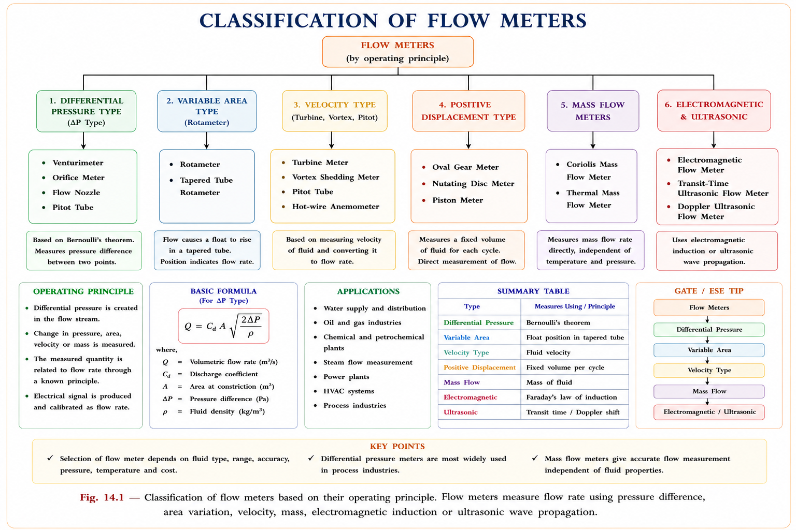
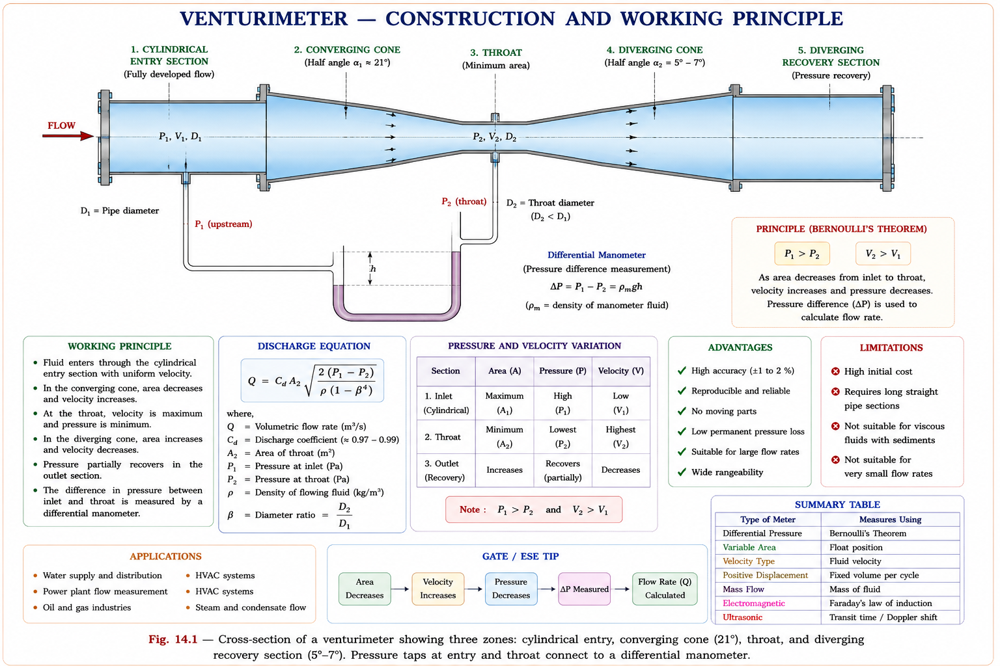
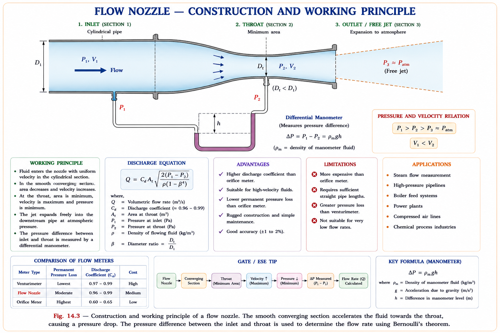
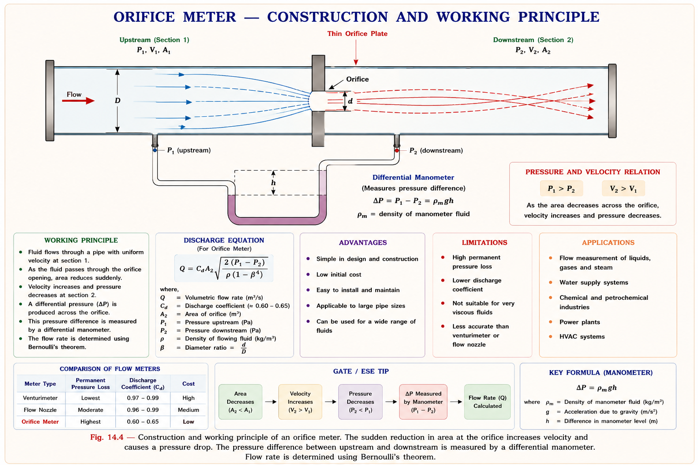
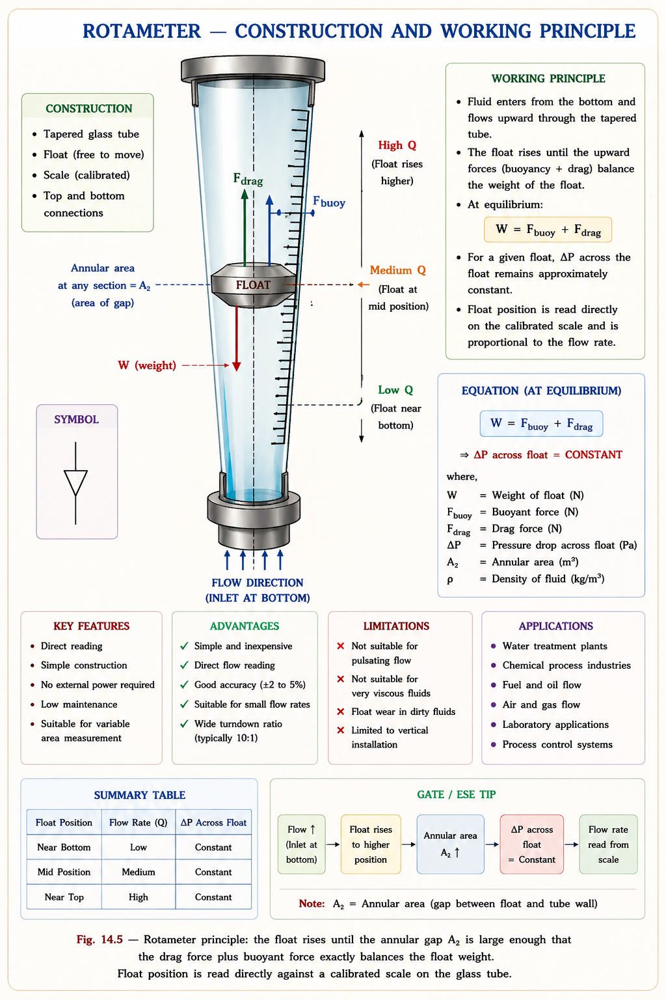
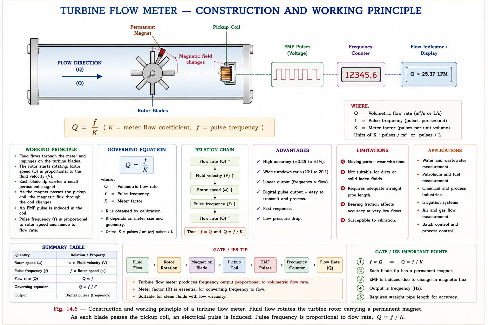
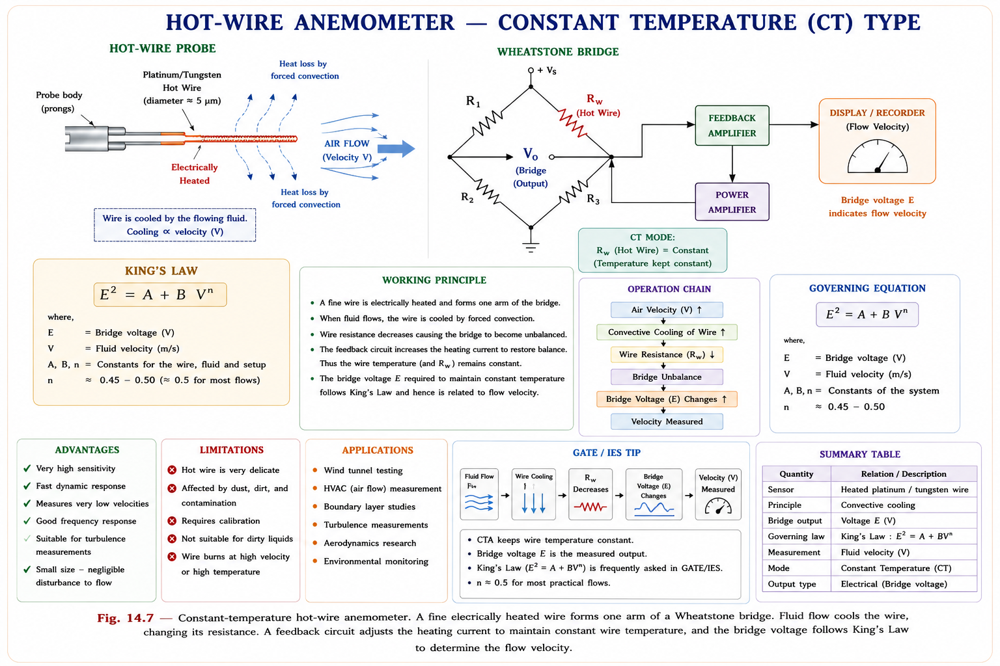
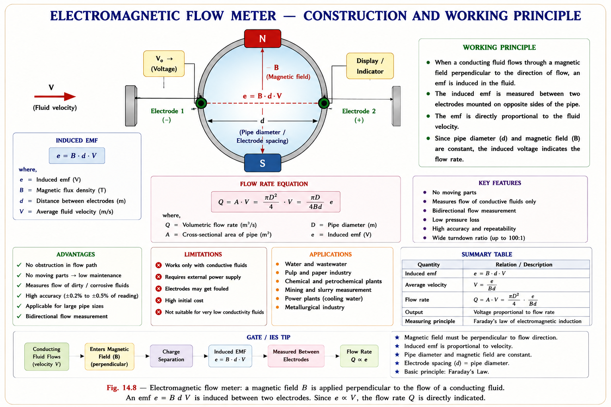
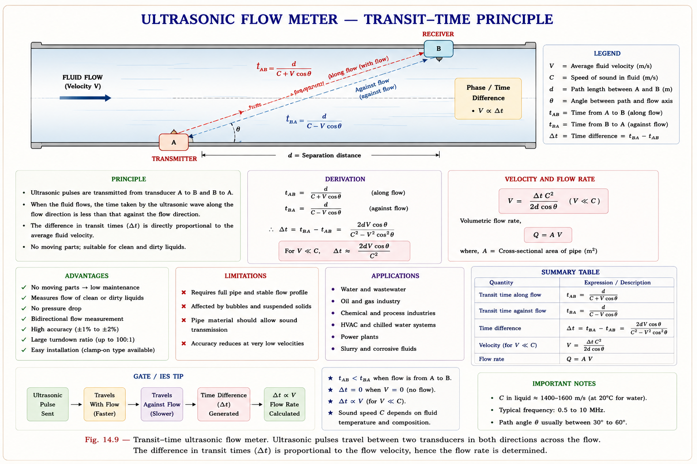

Variable-head meters, venturimeter, flow nozzle, orifice plate, rotameter, turbine meter, electromagnetic, ultrasonic, and hot-wire anemometer — complete GATE, IES, and PSU coverage with full derivations, inline SVG diagrams, and exam-focused insights.
Flow measurement is one of the most commercially significant measurements in all of engineering. Whether it is cooling water in a nuclear reactor, natural gas through a city distribution main, crude oil through a refinery pipeline, or air in an HVAC duct — quantifying how much fluid passes per unit time directly determines energy consumption, product yield, safety margins, and billing accuracy.
Flow meters account for nearly 40% of all process measurement installations globally (Doebelin, Measurement Systems). Errors in flow measurement propagate directly into material balance, heat balance, and custody-transfer calculations — making calibration and meter selection critical engineering decisions.

The entire family of differential-pressure flow meters — venturimeter, flow nozzle, orifice plate — rests on a single physical idea: when a flowing fluid is forced through a constriction, kinetic energy rises and static pressure falls. The pressure difference across the constriction is a monotonic function of flow rate and can be measured with a differential manometer or transmitter to infer \(Q\).
Consider a fluid element flowing between upstream section 1 (pipe bore) and downstream section 2 (throat). Applying the First Law of Thermodynamics to an open system with steady, adiabatic, frictionless flow and no shaft work (🟢 HIGH GATE concept):[1]
Applying the simplifying assumptions for a variable-head meter in practical use:
(i) Adiabatic: \(q = 0\) · (ii) No shaft work: \(w_s = 0\) · (iii) Frictionless: \(u_1 = u_2\) · (iv) Horizontal meter: \(z_1 = z_2\) · (v) Steady, incompressible: \(\rho_1 = \rho_2 = \rho\)
The energy equation reduces to the celebrated Bernoulli equation:[1]
Conservation of mass for steady, incompressible flow: \(\rho A_1 V_1 = \rho A_2 V_2\), giving:
Substituting the continuity relation into the Bernoulli equation and solving for \(V_2\):
This is the ideal throat velocity — it over-estimates actual velocity because all real flows have friction. The coefficient of velocity \(C_v\) corrects for this:
Applying continuity: \(Q = A_2 \cdot V_2\). Combining \(C_v\) with the coefficient of contraction \(C_c\) (= ratio of actual jet area to meter throat area) gives the coefficient of discharge \(C_d = C_v \cdot C_c\):
The term \(M = \dfrac{1}{\sqrt{1-(A_2/A_1)^2}}\) is called the velocity of approach factor (always \(\geq 1\)); when \(V_1 \approx 0\), \(M = 1\). The complete practical form is:
where \(E\) is the thermal expansion correction factor (≈ 1 for liquids, required for gases). The pressure differential \((p_1-p_2)/w\) (units: metres of fluid head) is measured by a differential manometer.
\(C_d\) is not constant — it depends on the Reynolds number and geometry. For a venturimeter \(C_d \approx 0.95\text{–}0.98\); for an orifice \(C_d \approx 0.61\text{–}0.65\). Always use the value specified in the problem or standard.
Understanding the hierarchy of flow coefficients prevents the most common numerical errors in GATE and IES problems. Each coefficient corrects for a specific physical imperfection in the ideal model.
| Coefficient | Symbol | Physical Meaning | Typical Value |
|---|---|---|---|
| Velocity | \(C_v\) | Actual velocity ÷ Ideal velocity. Accounts for friction losses between the two pressure taps. | 0.97–0.99 |
| Contraction | \(C_c\) | Area of vena contracta ÷ Area of orifice. Relevant only for orifice plates; \(C_c \approx 1\) for venturi and nozzle. | 0.61–0.67 (orifice) |
| Discharge | \(C_d\) | \(C_d = C_v \times C_c\). The single correction factor actually used in the discharge equation. | 0.95–0.98 (venturi) 0.61–0.65 (orifice) |
| Flow (K) | \(K\) | \(K = C_d \times M\). Combines discharge coefficient and approach velocity factor into one number for nozzles and orifice plates. | Depends on geometry |
Each step multiplies into the next: \(K = C_d \times M = C_v \times C_c \times M\). The venturimeter has \(C_c = 1\) so \(C_d = C_v\) ≈ 0.97. The orifice has both \(C_v\) and \(C_c\) significantly below 1, making \(C_d\) ≈ 0.61.
The venturimeter was designed by Clemens Herschel in 1887 based on Venturi's original work, and remains the most accurate of all differential-pressure meters. Its smooth, gradual convergence and divergence minimise energy loss and give a coefficient of discharge very close to unity.

For a horizontal venturimeter with mercury U-tube manometer of reading \(h_m\), the pressure differential is \((p_1-p_2) = \rho g \, h_m \,(S_m/S_f - 1)\), where \(S_m\) and \(S_f\) are specific gravities of manometer fluid and flowing fluid. This gives:[2]
A horizontal venturimeter has inlet diameter \(D_1 = 20\) cm and throat diameter \(D_2 = 10\) cm. The differential gauge reads \(h_m\) cm of mercury when water flows through it. If the discharge coefficient \(C_d = 0.98\), which of the following correctly describes the ratio of throat velocity to inlet velocity?
Key Reasoning: From continuity: \(A_1 V_1 = A_2 V_2\), so \(V_2/V_1 = A_1/A_2 = (D_1/D_2)^2 = (20/10)^2 = 4\). Area ratio drives velocity ratio — it's the square of the diameter ratio, not the diameter ratio itself.
A flow nozzle is essentially a venturimeter with its diverging recovery section removed. The fluid exits the nozzle throat as a free jet directly into the downstream pipe. This makes the nozzle cheaper and shorter than a venturi, but at the cost of a larger permanent pressure loss.

The same equation \(Q = C_d M A_2 \sqrt{2\Delta p/\rho}\) applies with \(C_c = 1\) (no vena contracta). The single-factor form \(Q = K A_2 \sqrt{2\Delta p/\rho}\) uses \(K = C_d M\), which is called the flow coefficient.
The orifice plate is the simplest, cheapest, and most widely used differential-pressure flow meter. It is a thin, flat, circular disc with a concentric sharp-edged hole, clamped between pipe flanges. Despite its simplicity, it has the most complex flow behaviour — particularly the vena contracta phenomenon.

The fluid jet does not fill the full orifice area \(A_2\) — it continues to contract after passing through the hole. The minimum jet cross-section (vena contracta) occurs 0.5–1.0 diameters downstream, where \(A_{vc} = C_c \cdot A_2\). Pressure is minimum at the vena contracta. The downstream tap is placed at a fixed fraction of pipe diameter to approximate this location — but the precise position depends on Reynolds number, which is why \(C_d\) for orifices varies more than for venturimeters.
| Tap Type | Upstream Tap Location | Downstream Tap Location | Application |
|---|---|---|---|
| Flange taps | 25 mm from orifice face | 25 mm from orifice face | Most common; ASME standard |
| Corner taps | At orifice plate face | At orifice plate face | ISO 5167; small pipes |
| Vena contracta taps | 1D upstream | 0.3–0.8D downstream (β-dependent) | Maximum \(\Delta P\); less common |
| Pipe (D–D/2) taps | 1D upstream | 0.5D downstream | Large pipes; ISA standard |
In comparison with a venturimeter, an orifice plate:
Reason: The orifice has a vena contracta (\(C_c < 1\)) that reduces the effective area below the orifice bore, giving \(C_d \approx 0.61\) vs. venturi's \(C_d \approx 0.97\). And without a diffuser, kinetic energy is not recovered — permanent loss is 40–90% of \(\Delta P\) versus less than 10% for the venturimeter.
The rotameter (also called a variable-area meter or rota meter) inverts the operating principle of differential-pressure meters. Instead of holding the flow area constant and measuring the varying pressure difference, it holds the pressure drop constant and measures the varying area. The position of a float in a tapered glass tube directly indicates flow rate.

At steady state, the three forces on the float balance. Let \(V_f\) = float volume, \(\rho_f\) = float material density, \(\rho\) = fluid density, \(A_f\) = float frontal area, and \(A\) = annular gap area between float and tube wall:
Since \(\Delta P\) is constant (independent of \(Q\)), applying the continuity/Bernoulli analysis to the annular orifice gives the volumetric discharge equation:[3]
Because \(\Delta P\) is fixed, \(Q \propto A\). And since the tube is conical, annular area \(A\) is nearly proportional to the float height \(y\): \(Q \approx K_1 y + K_2\). This linear relationship makes the rotameter scale easy to read and engrave directly on the glass tube.
Slots cut helically in the float rim cause it to spin about the vertical axis when liquid flows past. This rotation stabilises the float centrally (gyroscopic action), prevents eccentric wear, and helps dislodge any sediment that might accumulate on the float surface — hence the name rotameter.
A turbine meter uses a freely rotating rotor (multi-bladed axial turbine wheel) placed centrally in the pipe. The angular velocity of the rotor is proportional to the fluid's mean linear velocity and hence to the volumetric flow rate.

where \(f\) = pulse frequency [pulses/s], \(K\) = flow coefficient [pulses/litre] (depends on rotor geometry and fluid viscosity)
The hot-wire anemometer measures the local point velocity in a flow field — not the average volumetric flow rate. It exploits the fact that forced convection cooling of a heated wire is a function of the fluid velocity past it. This makes it uniquely capable of measuring turbulent fluctuations at frequencies up to 100 kHz.

\(E\) = instantaneous bridge voltage, \(E_0\) = bridge voltage at zero flow, \(B\) = calibration constant (depends on wire properties and fluid), \(V\) = local flow velocity.
The electromagnetic flow meter applies Faraday's law of electromagnetic induction to measure flow rate — with zero obstruction to the flow path. It is the only common flow meter that is truly non-intrusive (no insert in the pipe bore).
A conductor of length \(l\) metres moving with velocity \(v\) m/s perpendicular to a magnetic field of flux density \(B\) Wb/m² generates an EMF \(e = B l v\) volts. In the EM meter, the conductive fluid is the moving conductor.

Because the induced EMF is proportional to \(Q\) and the meter geometry is fixed, the EM meter gives a perfectly linear output.
The flowing fluid must be electrically conductive — minimum conductivity ≈ \(10^{-3}\) mho/m. This works for water, slurries, acids, and liquid metals — but NOT for hydrocarbons (oil, petrol), gases, or steam. The pipe lining must be non-conducting (PTFE or rubber) to prevent short-circuiting the induced EMF.
Ultrasonic meters exploit the interaction between sound propagation velocity and fluid flow velocity. Two piezoelectric crystals act alternately as transmitter and receiver, mounted either directly across the pipe (transit-time method) or at an angle.

Let \(C\) = speed of sound in medium (m/s), \(v\) = fluid velocity (m/s), \(d\) = path length between crystals, \(\theta\) = angle between sound path and pipe axis. Then:[4]
The key advantage: output is independent of the sound velocity \(C\) (and hence independent of temperature and pressure variations) — this is why transit-time meters are highly accurate.
An alternative operating principle: the same crystal sends a continuous sinusoidal signal at frequency \(f\) Hz in both directions simultaneously. The phase shifts of the two received signals differ by:
| Feature | EM Flow Meter | Ultrasonic Flow Meter |
|---|---|---|
| Operating Principle | Faraday's law of EM induction | Transit-time / phase difference of sound |
| Fluid Requirement | Conductive fluid only | Any fluid (liquid or gas) that transmits sound |
| Obstruction to Flow | None (fully non-intrusive) | None (clamp-on version available) |
| Pressure Drop | Zero | Zero |
| Linearity | Excellent (direct \(Q \propto e\)) | Good (transit-time: linear) |
| Viscosity Sensitivity | None | None |
| Suitable for Slurries | Yes (ideal) | No (scatters sound) |
| Cost | High | High (but clamp-on versions cheaper) |
| Bidirectional | Yes | Yes |
In an electromagnetic flow meter, the pipe has diameter \(d = 8\) cm. The magnetic flux density \(B = 400\) gauss \(= 400 \times 10^{-4}\) T. Tap water flows at \(Q_v = 400\) litres/min. Find the peak induced EMF across the electrodes.
Solution (from first principles):
\(Q_v = 400/60 = 6.667\) litre/s \(= 6.667 \times 10^{-3}\) m³/s
\(A = \pi(0.08)^2/4 = 5.027 \times 10^{-3}\) m²
\(V = Q_v/A = 1.326\) m/s
\(e = B \cdot d \cdot V = 0.04 \times 0.08 \times 1.326\)
\(\mathbf{e \approx 4.24 \text{ mV}}\)
Insight: The tiny millivolt-level output requires high-gain amplifiers with excellent noise rejection — a key practical challenge in EM meter design.
Transducers of an ultrasonic flow meter are separated by \(l = 25\) mm. The line joining them makes an angle \(\theta = 60°\) with the direction of flow. Speed of sound in medium \(V_s = 1000\) m/s. Transit time difference \(\Delta t = 10\) ns. Find fluid flow velocity.
Solution:
Using \(V_f = \dfrac{\Delta t \cdot V_s^2}{2d\cos\theta}\):
\(V_f = \dfrac{10 \times 10^{-9} \times (1000)^2}{2 \times 25 \times 10^{-3} \times \cos
60°}\)
\(= \dfrac{10^{-8} \times 10^6}{2 \times 0.025 \times 0.5} = \dfrac{0.01}{0.025} = \mathbf{0.4
\text{ m/s}}\)
1. Discharge equation \(Q = C_d M A_2 \sqrt{2\Delta p/\rho}\) — plug-and-solve numericals. 2. Manometer-based \(\Delta P\) calculation: \((p_1-p_2) = \rho g h_m (S_m/S_f - 1)\). 3. \(C_v\), \(C_c\), \(C_d\) definitions and \(C_d = C_v \times C_c\). 4. EM flow meter formula \(e = BdV\). 5. Ultrasonic transit-time equation. 6. Rotameter — constant \(\Delta P\), variable area, float equilibrium.
1. Venturimeter vs. orifice comparison (advantages/limitations). 2. Hot-wire anemometer modes (CC vs. CT), King's Law. 3. Vena contracta location and significance. 4. Turbine meter pulse-frequency relationship \(Q = f/K\). 5. Rotameter discharge derivation and linear \(Q\)–\(y\) relationship.
Trap 1: Using \(V_2/V_1 = D_1/D_2\) (diameter ratio) instead of
\((D_1/D_2)^2\) (diameter ratio squared) — continuity gives area ratio, not diameter
ratio.
Trap 2: Assuming \(C_d\) is constant across different meters — it is 0.97
for venturi, 0.61 for orifice. Use the given value.
Trap 3: Using the orifice area \(A_2\) as the effective flow area in
orifice calculations — actual flow area is \(C_c \times A_2\) at the vena contracta.
Trap 4: For EM meters: \(e = BdV\) uses \(d\) as the pipe diameter
(= electrode spacing), not the pipe radius. Off by factor 2 if confused.
Trap 5: Rotameter must be vertical — gravity is the restoring force. A
horizontal rotameter does not work.
Which of the following statements correctly distinguishes a rotameter from an orifice plate meter?
This is the fundamental distinction between all differential-pressure (variable-head) meters and variable-area meters. It forms the basis of the entire classification.
An electromagnetic flow meter is NOT suitable for measuring the flow of:
Reason: EM meters require electrically conductive fluid (minimum \(10^{-3}\) mho/m). Petroleum and gases are electrical insulators — no EMF is induced. Options A, B, D are all conductive and routinely measured with EM meters.
| Meter | Operating Principle | Typical \(C_d\) | Pressure Loss | Best Application | Limitation |
|---|---|---|---|---|---|
| Venturimeter | Variable-head, DP | 0.95–0.98 | Very low (5–10%) | Large pipe, clean liquids/gas | Long, expensive |
| Flow Nozzle | Variable-head, DP | 0.92–0.98 | High (80–90%) | High-pressure steam flow | Poor pressure recovery |
| Orifice Plate | Variable-head, DP | 0.61–0.65 | Highest (40–90%) | General-purpose; low cost | Clogging, high loss |
| Rotameter | Variable-area, buoyancy | 0.6–0.9 | Constant, low | Small flows; purge/coolant | Vertical only; glass breakage |
| Turbine Meter | Velocity-angular speed | — | Moderate | Clean liquid; custody transfer | Wear; viscosity sensitive |
| Hot-Wire Anemometer | Thermal cooling rate | — | Negligible | Point velocity; turbulence research | Fragile; not for dirty fluids |
| EM Flow Meter | Faraday induction | — | Zero | Conductive liquids; slurries | Conductive fluid only |
| Ultrasonic (Transit-time) | Sound speed differential | — | Zero | Liquids and gases; clamp-on | Cost; not for slurries |
Ask any question about flow measurement — derivations, numerical problems, concept comparisons, or GATE exam strategy.
Bernoulli: \(\Delta P = \rho(V_2^2-V_1^2)/2\). Discharge: \(Q = C_d M A_2 \sqrt{2\Delta p/\rho}\). \(M = 1/\sqrt{1-(A_2/A_1)^2}\) (approach factor). \(\Delta P\) measured by manometer.
\(C_v\) = vel. correction (~0.98). \(C_c\) = contraction (~0.61–1.0). \(C_d = C_v \times C_c\). Venturi: \(C_d \approx 0.97\), \(C_c=1\). Orifice: \(C_d \approx 0.61\), \(C_c < 1\). \(K = C_d M\).
Venturimeter > Flow Nozzle > Orifice (for DP meters). EM meter linear (excellent). Ultrasonic: C-independent (transit-time). Rotameter: direct-reading visual.
Constant \(\Delta P\), variable area. Float equilibrium: \(W = F_{buoy} + F_{drag}\). \(\Delta P = V_f g(\rho_f-\rho)/A_f\) = const. \(Q \propto A\) (gap area) \(\propto y\) (float height). Must be vertical.
Faraday: \(e = BdV\). \(Q = (\pi d/4B)\cdot e\). Zero pressure drop. Conductive fluid only (\(\sigma \geq 10^{-3}\) mho/m). Linear output. Ideal for slurries, corrosives. Bidirectional.
\(v_f = \Delta t \cdot V_s^2 / (2d\cos\theta)\). Phase: \(\Delta\phi = 4\pi fd v/C^2\). Output independent of sound speed \(C\) → pressure & temp. immune. Zero obstruction. Any pipe size.
Pressure Measurement Transducers — Bourdon tube, diaphragm, capsule, bellows, piezoelectric, piezoresistive, capacitive and LVDT-based pressure sensors. Complete GATE EE/IN and IES E&T coverage with derivations, dynamic response analysis, and PSU-level numerical problems.
All technical content is derived from the following standard textbooks and resources. All explanations, derivations, diagrams, and numerical approaches are original to Aarova AI.